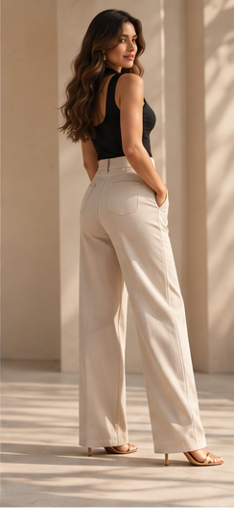
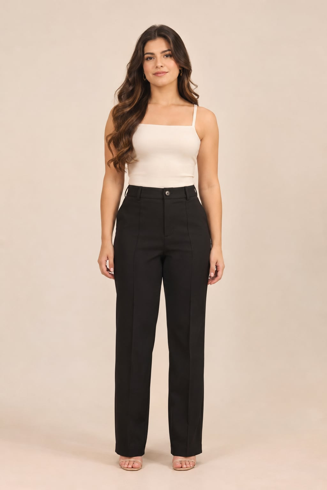
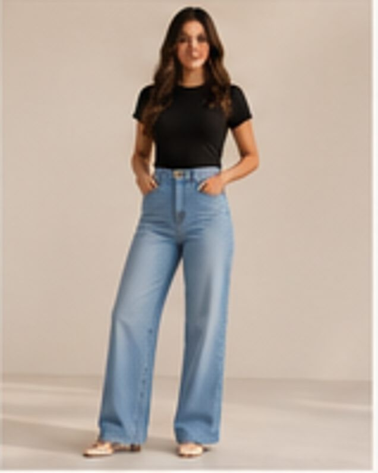
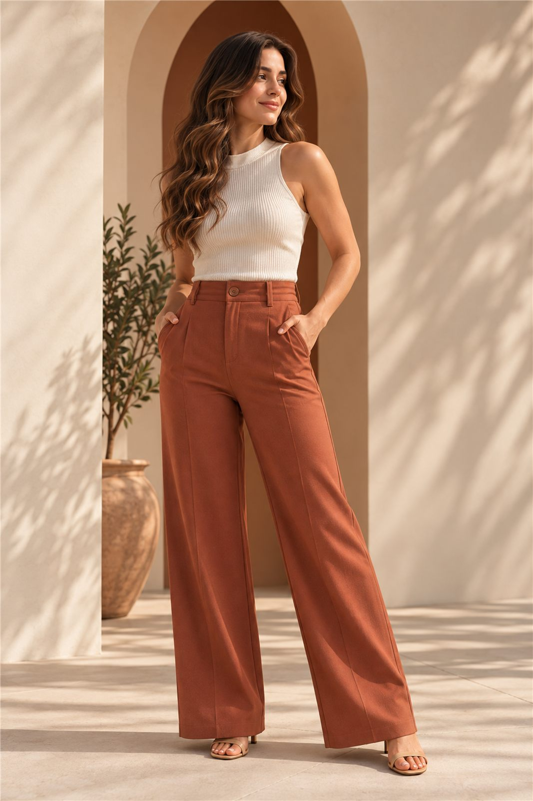
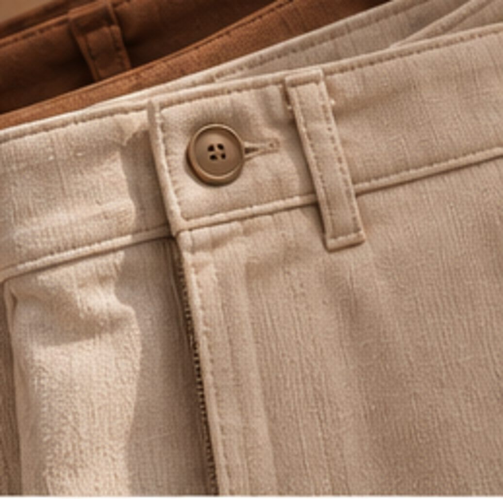

Calça alfaiataria
Pregas e vinco, para o trabalho.
Conhecer a calça alfaiataria
- Cós na cintura, com gancho mais curto
- Bolsos menores e mais altos
- Barra pronta para quem tem até 1,55m
Durante muito tempo, a moda estabeleceu padrões. Nós acreditamos que o vestir deve acompanhar você, e não o contrário.

Cintura, bolso e barra cortados para a sua altura. Você veste sem ajuste, por R$ 350.
Pregas e vinco, para o trabalho.

Perna larga do quadril à barra.

Perna reta, cintura alta.

Jeans claro de todo dia.
Cintura, bolso e tecido mudam quando a calça é feita para mulheres baixas.
Gancho mais curto: o cós para na cintura, não nas costelas.
Menores e mais altos, não abrem quando você senta.
A perna cai reta até a barra, sem colar no corpo.
Cada calça fecha com o botão Seu Jeito.
A calça chega no seu comprimento, com salto ou sem. Nada de levar à costureira antes de usar.

Cada tamanho tem nome de pedra. Na primeira compra você informa a altura, a câmera mede o resto e o site sugere o tamanho.


O pedido fecha pelo WhatsApp, então qualquer outra dúvida você tira por lá.
As calças são cortadas para até 1,55m. Acima disso a barra tende a ficar curta, ainda mais com salto.
Pela cintura, na tabela de tamanhos. Na primeira compra você informa só a altura; a câmera do celular mede cintura, quadril e perna, e o site sugere o tamanho.
Você monta a sacola aqui e envia o pedido pelo WhatsApp. Lá combinamos o pagamento e o frete, com entrega em todo o Brasil.
Sim. Ele abre a câmera e desenha a calça sobre o seu corpo. É uma prévia: o caimento real segue as suas medidas.